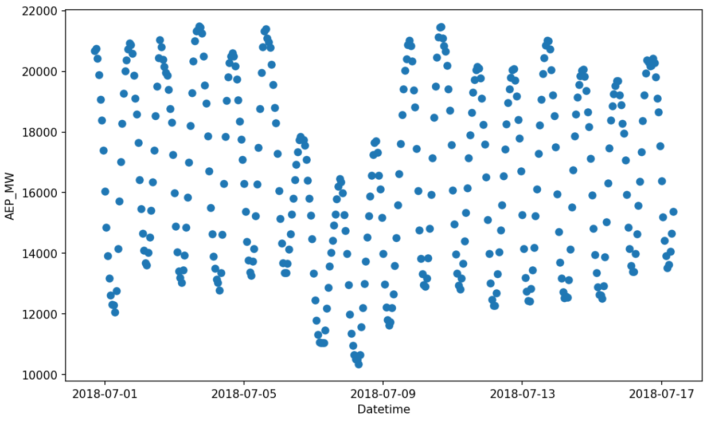

Modeling Trends#
The trend is the component of your data that desribes its local mean value, around which the seasonalities oscillate. Typically, trends are not constant, but evolve upwards or downwards and are subject to sudden changes. Gloria assumes a continuous linear trend model, that is, it models a piecewise-linear trend function whose rate is allowed to change at specified changepoints without introducing discontinuities.
In our introductory example basic usage, we deliberately chose a section of the power-consumption data set, which does not exhibit trend changes. By setting n_changepoints=0 we forced the Gloria model to fit a simple linear trend. Now let’s look at a different part of the same data set, several days further back in time.
import pandas as pd # For loading and processing
import matplotlib.pyplot as plt # For plotting
# Load the data
data = pd.read_csv("data/AEP_hourly.csv")
# Save the column names for later usage
timestamp_name = "Datetime"
metric_name = "AEP_MW"
# Convert to datetime
data[timestamp_name] = pd.to_datetime(data[timestamp_name])
# Restrict data
window_duration = 400
window_start = 800
data = data.sort_values(by="Datetime").iloc[
-window_start : -window_start + window_duration
]
# Inspect the data
fig, ax = plt.subplots(figsize=(10, 6), dpi=150)
ax.plot(data[timestamp_name], data[metric_name], "o")
We quickly realize that the overall patterns are the same, but there is a three-day drop in the power consumption starting 2018-07-06, probably related to the North American heat wave.
{kind=link}
We now try to model this drop by allowing Gloria to include trend changes. Note that the only change compared with the code in basic usage is to omit n_changepoints=0:
from gloria import Gloria
# Set up the Gloria model
m = Gloria(
model="gamma",
metric_name=metric_name,
timestamp_name=timestamp_name,
sampling_period="1 h"
)
# Add observed seasonalities
m.add_seasonality("daily", "24 h", 2)
m.add_seasonality("weekly", "7 d", 2)
# Fit the model to the data
m.fit(data)
# Predict
prediction = m.predict(periods=1)
# Plot
m.plot(prediction)
{kind=link}
Examining the plot, we see that the data are fitted nicely, but the trend changes are too frequently and too noisy. Most likely, Gloria was too flexible and over-fitted the data as affirmed by the narrow confidence band. There are overall three main strategies to customise the trend fit and make it more robust:
Number of Changepoints#
If nothing else is specified - as in our first attempt - Gloria’s default is to allow 25 changepoints. These changepoints are placed on an equidistant grid across the first 80 % of the data. To make the trend more well-behaved, we can reduce the number of changepoints by setting n_changepoints = 2, which produces the plot shown below.
{kind=link}
Note
Restricting changepoint detection to the first 80 % of history guards against mistaking the most recent seasonal bumps for genuine trend shifts. If your data truly do change late in the sample raise the changepoint_range parameter of the Gloria model.
List of Changepoints#
While the last result is already more well-behaved, we see that one of the automatically placed changepoints lies in the middle of the drop rather than at its edges while the other is nowhere near the drop. As a result, some daily oscillations are over-estimated whereas others are under-estimated. It would be better to place three custom changepoints: one at each edge of the drop and one in the middle. This can be done by providing a list of changepoints; in that case the automatic grid is disabled.
# Specify the changepoints
changepoints = [
"2018-07-06 00:00:00",
"2018-07-07 18:00:00",
"2018-07-09 12:00:00"
]
# Set up the Gloria model
m = Gloria(
... # Other settings
changepoints=changepoints
)
{kind=link}
Adjust the Prior Scale#
Specifying changepoints or restricting their number works well if you have some prior knowledge. If you prefer to let the model decide where a changepoint is worthwhile, you can instead tighten changepoint_prior_scale. This parameter controls the allowed magnitude of rate changes at changepoints. If you reduce the prior scale, large rate changes are permitted only when they significantly improve the model fit. Internally, Gloria realizes this by putting a sparse L1 prior on the size of each possible rate change. Here we use changepoint_prior_scale = 1e-4, which is much stricter than the default value of 0.05. Conversely, increasing changepoint_prior_scale above 0.05 makes the trend more agile, which can be useful if you suspect multiple genuine shifts. The result is similar to supplying an explicit list of changepoints.
{kind=link}
Tip
To choose changepoint_prior_scale objectively, use time-series cross_validation() together with performance_metrics() and pick the value that minimises out-of-sample error.